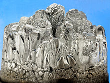

Magnesium is a chemical element with the symbol Mg and atomic number 12. It is a shiny gray solid which shares many physical and chemical properties with the other five alkaline earth metals (group 2 of the periodic table). This element is produced in large, aging stars from the sequential addition of three helium nuclei to a carbon nucleus. When such stars explode as supernovas, much of the magnesium is expelled into the interstellar medium where it may recycle into new star systems. Magnesium is the eighth most abundant element in the Earth's crust and the fourth most common element in the Earth (after iron, oxygen and silicon), making up 13% of the planet's mass and a large fraction of the planet's mantle. It is the third most abundant element dissolved in seawater, after sodium and chlorine.